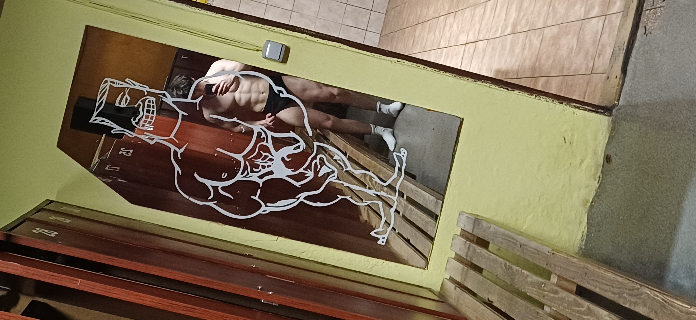
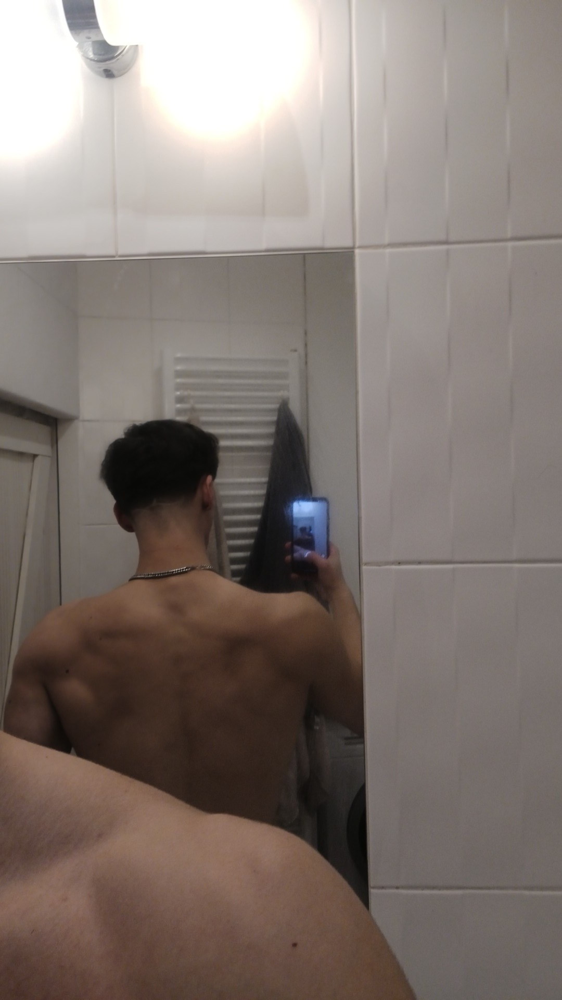
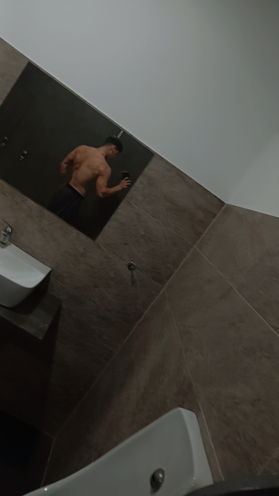
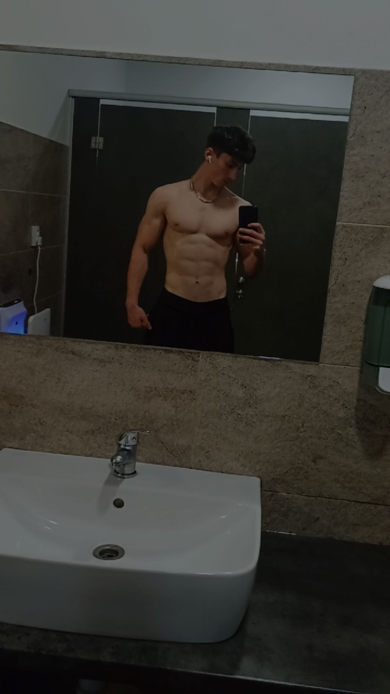
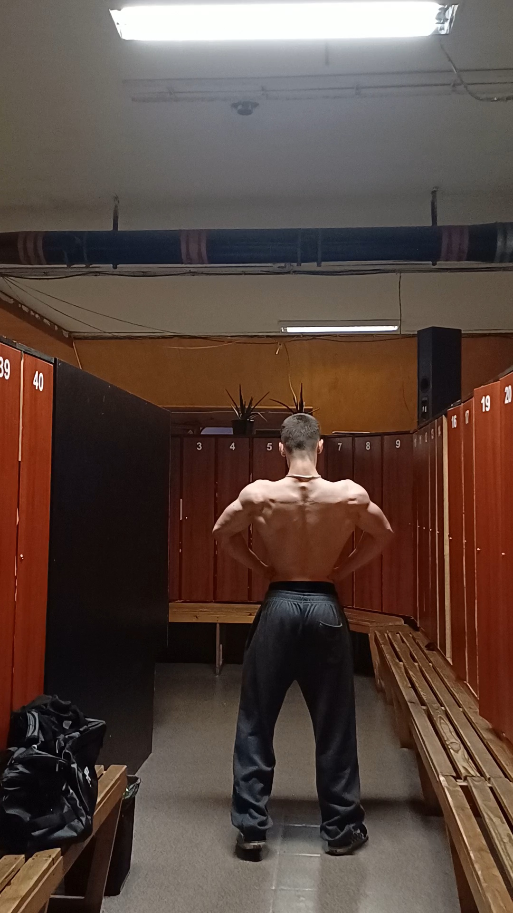
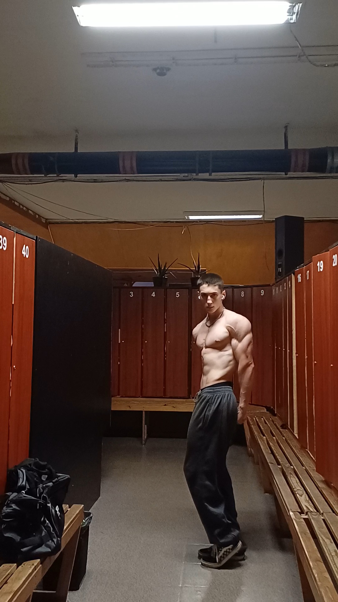
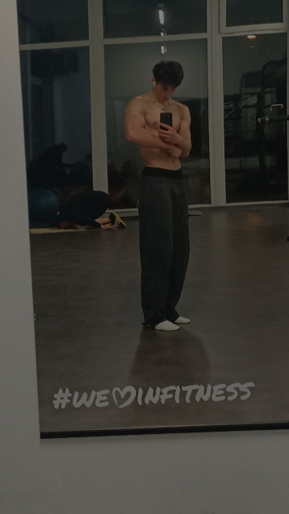
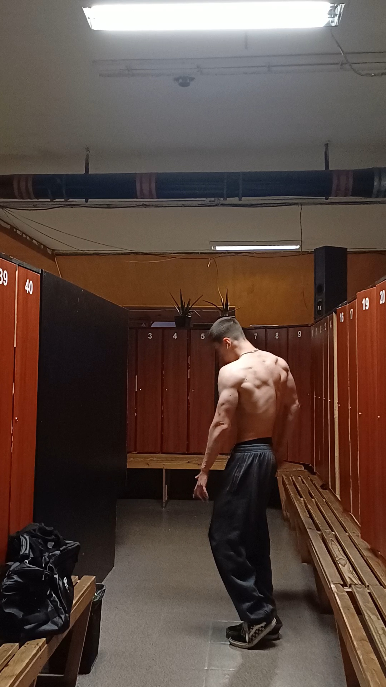

O MNĚ
Jmenuji se Jaroslav a věnuji se online coachingu zaměřenému na osobní rozvoj, disciplínu a mindset. Už delší dobu mě zajímá, jak lidé přemýšlí, co je brzdí v progresu a jak si nastavit život tak, aby měli větší kontrolu nad svými cíli i každodenním fungováním. Jsem člověk, který věří v jednoduchost, konzistenci a skutečné výsledky místo prázdné motivace. Neustále na sobě pracuji, učím se nové věci a zkušenosti předávám dál lidem, kteří chtějí udělat změnu ve svém životě. V online coachingu se zaměřuji na individuální přístup. Každý člověk je jiný, a proto společně hledáme řešení, která budou fungovat právě pro tebe. Nejde jen o krátkodobou motivaci, ale hlavně o vytvoření návyků a nastavení, které ti pomohou dlouhodobě růst. Cvičení je součást mého života už několik let a za tu dobu jsem pochopil jednu důležitou věc — výsledky nejsou o motivaci, ale o konzistenci. Každý může mít motivaci na pár dní, ale skutečný progres přichází ve chvíli, kdy dokážeš pokračovat i ve dnech, kdy se ti nechce. Fitness mi dalo mnohem víc než jen lepší postavu. Naučilo mě disciplíně, trpělivosti, sebeovládání a tomu, že dlouhodobá práce vždycky porazí krátkodobé výmluvy. Právě proto chci svoje zkušenosti předávat dál a pomáhat lidem vybudovat nejen lepší formu, ale i silnější mindset. Za svou cestu jsem udělal spoustu chyb — špatné tréninky, nesmyslné diety, přehnaná očekávání nebo zbytečný tlak na rychlé výsledky. Díky tomu ale dnes vím, co skutečně funguje a co je jen ztráta času. Můj přístup je postavený na jednoduchosti, efektivitě a dlouhodobě udržitelném systému. Nevěřím na extrémy ani na „zázračné“ plány. Věřím na tvrdou práci, správně nastavený trénink, kvalitní regeneraci a stravu, kterou dokážeš držet dlouhodobě bez toho, aby tě omezovala v normálním životě. Každý člověk má jiný startovní bod, jiné možnosti a jiné cíle. Proto ke každému přistupuju individuálně. Ať už chceš nabrat svaly, zhubnout, zesílit nebo se prostě cítit líp ve vlastním těle, cílem je vytvořit plán, který bude fungovat právě pro tebe. Nejde jen o to, jak vypadáš v zrcadle. Jde o to, jak se cítíš, jakou máš energii, sebevědomí a přístup k sobě samému. Fitness není krátkodobá změna na pár měsíců — je to investice do sebe na celý život.
Proč právě coaching ode mě?
Protože vím, jaké to je začínat. Vím, jaké je být ztracený v obrovském množství informací, nevědět co dělat a pochybovat o sobě. Chci lidem ukázat, že progres nemusí být komplikovaný, pokud máš správný směr a systém. Nečekej žádné nereálné sliby ani falešný marketing. Čekej upřímný přístup, podporu, zkušenosti a plán, který bude dávat smysl.
Moje výsledky







